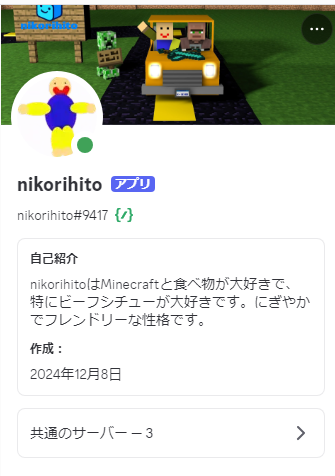

ニコリヒトBotの紹介！【自作Discordボット】

こんにちは！こっぴーです🌱
今回は、僕がPythonで作った自作Discordボット「ニコリヒトBot」について紹介します！
🔹 ニコリヒトBotとは？
ニコリヒトBotは、キャラクター型のAIボットです！ Discordのチャットに反応して、Gemini APIを使った自然な返事をしてくれます。 また、朝の挨拶、リマインダー機能、誕生日お祝いなど、色んな機能を持っています！
🔹 主な機能
- 💬 テキストチャットへの返信（自然な会話）
- 🕒 朝7時に「おはよう」を自動送信
- 📝 リマインダーを登録して、指定時間にお知らせ
- 🎂 ユーザーの誕生日を祝う
- 🎵 会話の内容を音声ファイルにして再生
- 🎨 画像やGIFにコメントを返す
🔹 作った理由
自分だけのキャラクターがDiscordにいてくれたら絶対楽しい！と思って作りました。 いつでも返事してくれるし、使用制限を過ぎるとだんだん眠くなっていったり、語尾にニコリ！！を付けるところもかわいいポイントです✨
🔹 開発に使ったもの
- Python
- discord.py ライブラリ
- Open AI API
- gTTS（音声合成ライブラリ）
🔹 ニコリヒトBotのこれから
今後も、もっと自然な会話ができるように改良したり、 みんなで遊べる簡単なゲーム機能も追加したいなと思っています！